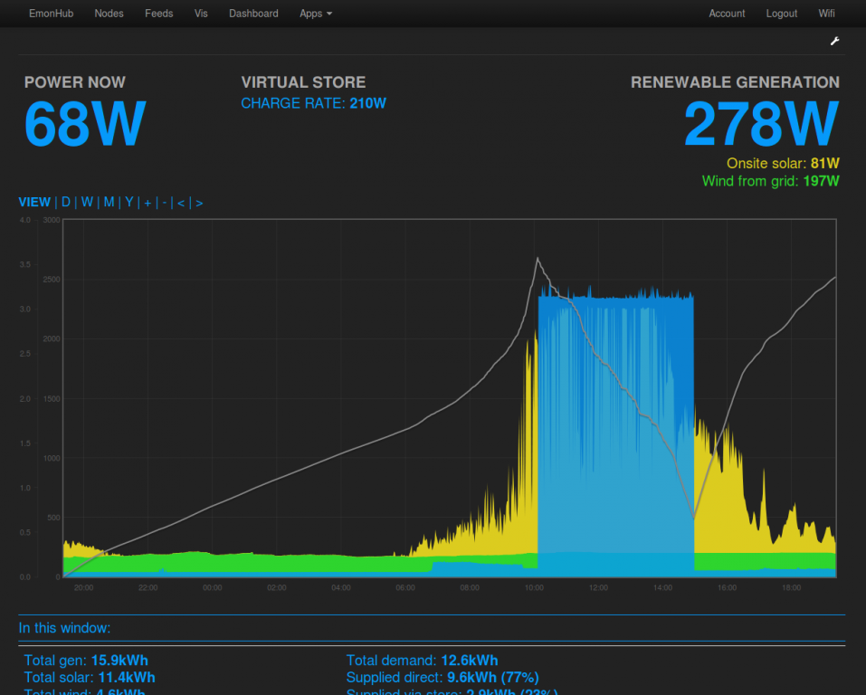

Hi All,
My kickstarter emonpi recently arrived - basic setup went just fine, so thanks very much :-)
However, I'm struggling a bit how to setup the feeds to give some useful information on my electric car usage. My setup is :-
- CT input 1 - total house power
- CT input 2 - electric car power only
What I think is going to be useful is :-
- Cost per day / week / month for total electricity
- Of that, how much was for the electric car
What I have so far can be seen here http://emoncms.org/plord/Improved
So my questions are :-
- How can I display costs for the the last 24 hours - I thought about multiplying the "Power to kWh/d" by the cost per unit, but it looks like "Power to kWh/d" is midnight-to-midnight. Also I can't see how to do a multiply in the feeds or dashboard
- How can I achieve cost over the last week or last month ?
- Can I express the electric car cost as a percentage of the total costs ?
Any other advice or example for using emonpi with an electric card ?
Thanks,
Pete
Re: Emon pi & electric car
Hello Pete, welcome to the forums! At the moment the support for cost information is limited, Id like to extend the myelectric app and mysolar to include cost information and show an automatically updating last 24h view which could also provide a last 24 hour cost as you mention. I use the mysolar app for looking at the amount of electric the car took to charge, you can select a particular charge by selecting that period in the graph and it then shows you how many kWh where consumed in the window:

Re: Emon pi & electric car
Many thanks - yes, I can see improving myelectric would be neat :-)
I suppose improving the zoom visualization would be another approach.
Thanks,
Pete